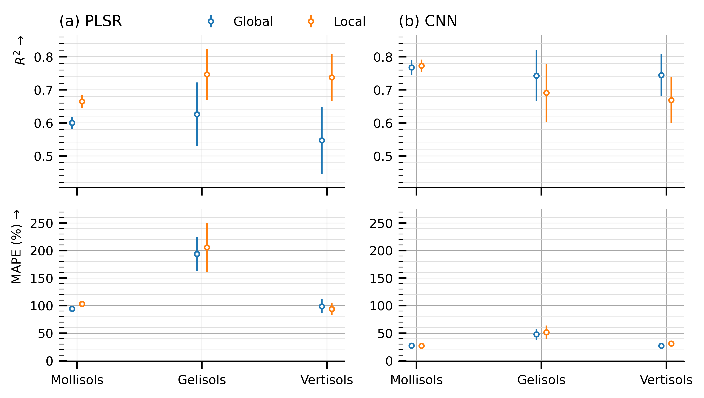

if 'google.colab' in str(get_ipython()):
from google.colab import drive
drive.mount('/content/drive', force_remount=False)
!pip install mirzai
else:5.3. Global vs. local modelling
Compare test PLSR & CNN performances on distinct Soil Taxonomy Orders when trained on all data indistinctly or by Soil Taxonomy orders.

# Python utils
from pathlib import Path
import pickle
from mirzai.vis.core import (centimeter, PRIMARY_COLOR,
set_style, DEFAULT_STYLE)
# Data vis.
import matplotlib.pyplot as plt
from matplotlib.gridspec import GridSpec
# Data science stack
import numpy as np
import warnings
warnings.filterwarnings('ignore')Input data
To generate the learning curves for both the PLSR and CNN models, run the following notebooks: * PLSR training & evaluation * CNN training & evaluation
Instead, we load already generated and saved data: global_vs_local.pickle.
src_dir = Path('dumps')fname = 'global_vs_local.pickle'
plsr_eval = pickle.load(open(src_dir/'plsr'/fname, "rb"))
cnn_eval = pickle.load(open(src_dir/'cnn'/fname, "rb"))cnn_eval{'global': {'r2': {'mean': [0.7676331478787332,
0.7426117015170665,
0.7447822268117752],
'std': [0.02264828790526842, 0.07670269031321013, 0.06303328480007991]},
'mape': {'mean': [27.362060993909836, 47.8833418753412, 26.85565337538719],
'std': [1.171648213272994, 10.194858798150458, 3.2722564855592804]}},
'local': {'r2': {'mean': [0.7727136487719102,
0.691142579693905,
0.6691275530909808],
'std': [0.019084647824623407, 0.08809393616324758, 0.06941770320711035]},
'mape': {'mean': [26.96375921368599, 51.508686112033, 30.958226919174194],
'std': [1.3522711409175694, 12.377707161654318, 4.237754935060679]}}}Plot
def plot_global_local_metric(data_global, data_local,
labels=['Mollisols', 'Gelisols', 'Vertisols'],
ax=None, delta=0.04,
global_kwargs={}, local_kwargs={}):
x = np.arange(len(labels))
ax.errorbar(x-delta, data_global['mean'], yerr=data_global['std'], label='Global', **global_kwargs)
ax.errorbar(x+delta, data_local['mean'], yerr=data_local['std'], label='Local', **local_kwargs)
ax.set_xticks(x, labels)
return(ax)
def plot_global_vs_local(plsr, cnn, labels,
figsize=(16*centimeter,6*centimeter), dpi=600):
# Adjust styles
p = plt.rcParams
p["xtick.minor.visible"] = False
# Layout
fig = plt.figure(figsize=figsize, dpi=600)
gs = GridSpec(nrows=2, ncols=2)
ax0 = fig.add_subplot(gs[0, 0])
ax0.set_title('(a) PLSR', loc='left')
ax1 = fig.add_subplot(gs[0, 1], sharey=ax0)
ax1.set_title('(b) CNN', loc='left')
ax2 = fig.add_subplot(gs[1, 0])
ax3 = fig.add_subplot(gs[1, 1], sharey=ax2)
# Plots
global_params = {'fmt':'o', 'mfc':'w', 'ms': 3, 'c': 'C0', 'ecolor': 'C0', 'elinewidth': 1}
local_params = {'fmt':'o', 'mfc':'w', 'ms': 3, 'c': 'C1', 'ecolor': 'C1', 'elinewidth': 1}
plot_global_local_metric(plsr['global']['r2'],
plsr['local']['r2'],
labels, ax=ax0, global_kwargs=global_params,
local_kwargs=local_params)
plot_global_local_metric(cnn['global']['r2'],
cnn['local']['r2'],
labels, ax=ax1, global_kwargs=global_params,
local_kwargs=local_params)
plot_global_local_metric(plsr['global']['mape'],
plsr['local']['mape'],
labels, ax=ax2, global_kwargs=global_params,
local_kwargs=local_params)
plot_global_local_metric(cnn['global']['mape'],
cnn['local']['mape'],
labels, ax=ax3, global_kwargs=global_params,
local_kwargs=local_params)
# Ornaments
ax0.set_ylabel('$R^2$ →', loc='top')
ax2.set_ylabel('MAPE (%) →', loc='top')
ax0.set_xticklabels([])
ax1.set_xticklabels([])
handles, labs = ax0.get_legend_handles_labels()
fig.legend(handles, labs,
frameon=False, ncol=2, loc='upper center',
bbox_to_anchor=(0.4, 0.99))
for ax in [ax0, ax1, ax2, ax3]:
ax.grid(True, "minor", color="0.85", linewidth=0.2, zorder=-2)
ax.grid(True, "major", color="0.65", linewidth=0.4, zorder=-1)
plt.tight_layout()#FIG_PATH = Path('nameofyourfolder')
FIG_PATH = Path('images')
set_style(DEFAULT_STYLE)
plot_global_vs_local(plsr_eval, cnn_eval, ['Mollisols', 'Gelisols', 'Vertisols'],
figsize=(16*centimeter,9*centimeter), dpi=600)
# To save/export it
plt.savefig(FIG_PATH/'global_vs_local.png', dpi=600, transparent=True, format='png')